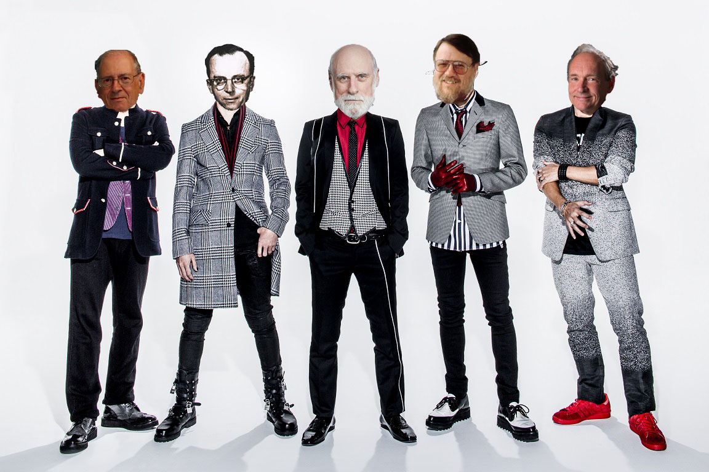

In this era,there are more than 3 billion people in this world are on the Internet. It means Internet has become one of the needs of a human's daily life. But there are a few people know about the history of the Internet and how Internet can be developed. First let's briefly introduce about the Internet.What is Internet? The Internet is a global system of interconnected computer networks that use the standard TCP/IP to serve billions of users worldwide. It is a network that consists of millions of private, public, business and government networks, of local to global scope, that are linked by a broad array of electronic, wireless and optical networking technologies.The video below is briefly showing what is Internet.
So, let's talk about the history and future of the Internet!
| Year | Incident |
| 1962 | JCR Licklider proposed a network of computers that talk to each other. |
| 1969 | The first message ( the word "LOGIN") was sent from USCLA to Stanford by ARPANET |
| 1971 | Ray Tomlinson was developing a system to send mail between users of ARPANET, called email |
| 1971 | Robert Kahn and Vinton Cerf developed TCP/IP |
| 1983 | The researchers began to assemble the "network of networks" that became the modern Internet. |
| 1990 | Tim Berners-Lee invented World Wide Web(WWW) |

The photo of the people who were mentioned in the table above(from left to right):
I have a good feeling about the Internet. It is because Internet is a good technology that has helped humans a lot. The most obvious example, search engine. Internet search engine has given us to the most. A portal leads us to everywhere we want. Two of the most obvious examples, Google and DuckDuckGo Thus, as a member of this world, I hope the Internet will keep enhancing to a whole new level.